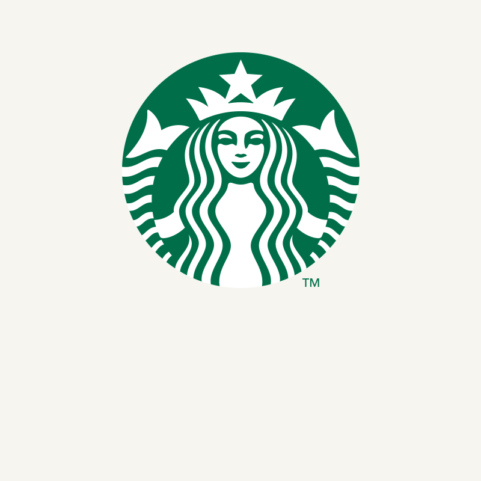

홈 > 브랜드 매거진 > 엔제리너스
엔제리너스
엔제리너스(Angel-in-us)는 롯데GRS가 운영하는 한국의 커피전문점 프랜차이즈다.
산업 분야 식음료 · 공개 등급 자료 기반 · 브랜드 평가 4 ★
한눈에 보는 브랜드
엔제리너스(Angel-in-us)는 2000년 자바커피로 출발해 2006년 '우리 안의 천사'라는 의미의 엔제리너스로 브랜드를 변경했다. 롯데그룹 외식 계열사 롯데GRS가 운영하며 2021년 새 BI를 도입해 리브랜딩을 진행했다.
브랜드 아이덴티티
롯데그룹 외식 인프라를 기반으로 한 감성 콘셉트의 커피 프랜차이즈다.
제품과 서비스
대표 제품과 서비스 정보는 편집 검수 후 공개됩니다.
타임라인
정리된 연도형 이벤트가 없습니다.
BI/CI 변천사
확인된 BI/CI 이미지가 아직 없습니다.
함께 읽을 브랜드
네슬레(Nestlé)는 스위스 브베에 본사를 둔 세계 최대 규모의 식음료 다국적 기업이다.
 식음료 · 자료 기반롯데리아
식음료 · 자료 기반롯데리아롯데리아(Lotteria)는 롯데그룹 계열 롯데GRS가 운영하는 한국 1위 버거 프랜차이즈로, 1979년 한국에 진출했다.
 식음료 · 자료 기반빽다방
식음료 · 자료 기반빽다방빽다방(Paik's Coffee)은 더본코리아가 운영하는 한국의 저가 커피 프랜차이즈다.
할리스(Hollys)는 KG그룹 계열이 운영하는 한국의 커피전문점 프랜차이즈다.
버거킹는 미국의 식음료 브랜드로, 맛, 메뉴 구성, 패키지, 매장 또는 유통 채널이 함께 브랜드 경험을 만드는 영역입니다.
 식음료 · 자료 기반오뚜기
식음료 · 자료 기반오뚜기오뚜기(Ottogi)는 1969년 설립된 한국의 종합 식품 기업으로, 국산 카레와 다양한 가공식품으로 알려져 있다.

식음료 · 자료 기반스타벅스코리아스타벅스코리아(Starbucks Korea)는 미국 스타벅스 브랜드를 한국에서 운영하는 커피 전문점 체인으로, 운영법인은 에스씨케이컴퍼니다.
 식음료 · 자료 기반롯데웰푸드
식음료 · 자료 기반롯데웰푸드롯데웰푸드(Lotte Wellfood)는 빼빼로·가나 초콜릿으로 유명한 롯데그룹 계열 제과 기업으로, 1967년 롯데제과로 설립돼 2023년 현 사명이 됐다.